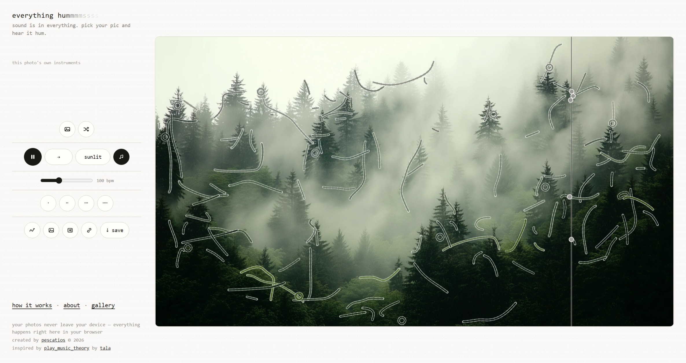

In this assignment, I will evaluate the User Interface (UI) and User Experience (UX) of the website: everything hums, created by edwin pescatios.

Everything hums is for music lovers, people looking for a break from scrolling, or anyone simply looking for something whimsical. It allows users to listen to "hums", or the sounds of images, in an endless loop until they choose to stop. The sounds are adjustable and the possibilities are endless. Users may upload their own image—as I did above—or browse through a preexisting gallery.
UI Evaluation
This is not a commerical website, and it is entirely artistic in purpose. So, although this is a single-page website, it still uses random organization.
It strongly follows 3 out of the 4 CRAP Design Principles:
- Repetition: The bottom links all feature a bold underline.
- Alignment: Informational text is aligned to the left, creative features are centered.
- Proximity: All sound tools are grouped together.
Everything hums has an audit score of 54/100. The biggest issue being the lack of contrast between the text and background, making it hard to view.
UX Evaluation
I personally spent a lot of time on this website and enjoyed messing around with it very much. It's easy to use and includes an index explaining how to use each feature. It is set up in a way that allows users to quickly and easily create their own hum with a unique image, or cycle through the site's own collection of photos. You can even export your hum to share with others!
Here's the hum I created with the image above!
What would I change?
Given what I know about accessibility and the website's low audit score, I would change the contrast of the text and background to make it easier to read (and overall easier on the eyes).